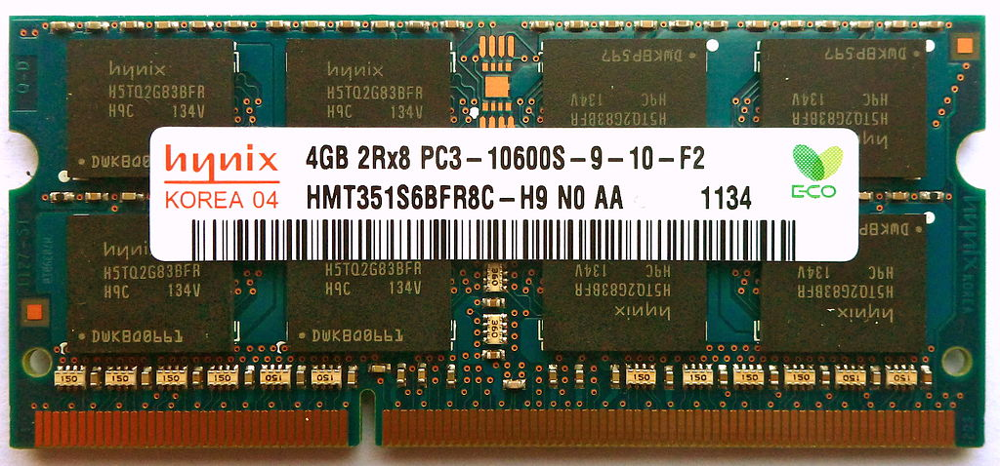
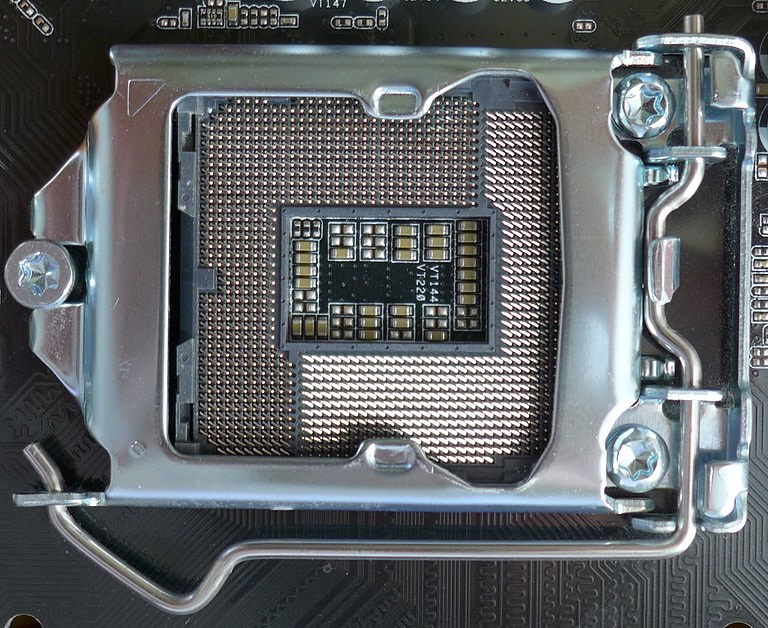
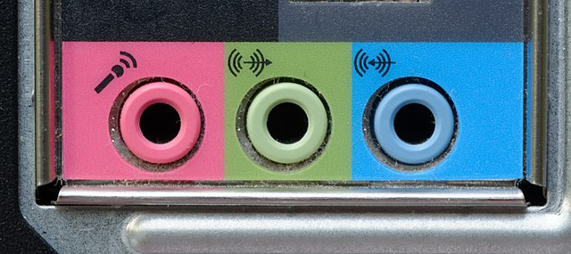

Comunicaciones¶
Las comunicaciones de los ordenadores permiten el movimiento de los datos entre diferentes dispositivos y componentes del ordenador. Son elementos fundamentales que se encuentran en todos los niveles de la informática, desde las líneas de comunicación interna de un microprocesador hasta las líneas de comunicación de Internet a nivel mundial.
Índice de contenidos:
Clasificación¶
- Conexiones internas
- Buses de placa base
- SATA
- PCI Express
- Zócalo para memoria RAM
- Zócalo para CPU
- Conexiones externas
- USB
- Conectores de audio analógico
- eSATA
- PS/2
- RS232
- Conexiones de vídeo
- VGA
- DVI
- HDMI
- Conexiones de red local
- Ethernet
- Conexiones inalámbricas
- Bluetooth
- Wifi
Conectores macho y hembra¶
Los conectores sirven para poder unir eléctricamente los cables a los ordenadores y al resto de periféricos.
Normalmente los cables suelen tener los pines de conexión salientes (conectores de tipo macho) y los ordenadores y el resto de equipos electrónicos tienen los agujeros (conectores de tipo hembra) donde se conectan los pines de conexión macho.
La razón para esta elección es que los pines macho de los cables se pueden romper o doblar con mayor facilidad que los agujeros hembra de los equipos. Si se estropean los pines de un cable, este se puede reemplazar por un costo reducido, mientras que si se estropea el conector de un ordenador o de un periférico sería mucho más costoso de reemplazar.
Otros conectores macho y hembra, como los conectores USB, no tienen pines de conexión, sino superficies de contacto y son mucho más robustos que los conectores con pines. Pero la elección de clavija macho para el cable y hembra para el equipo se suele mantener.
Genero de los conectores en Wikipedia en inglés.
Conexiones internas¶
- Buses de placa base
Son las pistas del circuito impreso que llevan los datos entre la CPU y el resto de los dispositivos conectados a la placa base.
Tiene muchas más líneas de datos que cualquier otro cable de comunicación y es el medio de transmisión más rápido con diferencia. Las distancias que recorren las líneas de datos son muy cortas, de pocos centímetros.
- SATA
El bus serial ATA conecta las unidades de almacenamiento del ordenador (HDD, SSD, discos ópticos) con el procesador. El bus SATA lleva en el mercado desde 2003 y actualmente se encuentra en funcionamiento la versión 3.0.
El cable de conexión desde la placa base hasta la unidad de almacenamiento puede llegar a tener hasta 1 metro de longitud, aunque la mayoría de los cables fabricados tienen una longitud menor. Esto es así porque SATA es un estándar pensado para conectar dispositivos dentro de la caja o carcasa del ordenador.
Versión Año Velocidad SATA 1.0 2003 150 megabyte/s SATA 2.0 2004 300 megabyte/s SATA 3.0 2008 600 megabyte/s 
Conectores SATA de datos y de alimentación de dos discos duros.¶
Dsimic, CC BY-SA 3.0, via Wikimedia Commons.- PCI Express
PCI Express abrevidado PCIe o PCI-e es un conjunto de conectores internos de la placa base, que sirve para conectar tarjetas de expansión al ordenador. Estas tarjetas de expansión pueden ser tarjetas gráficas, controladoras RAID, tarjetas de red Ethernet, tarjetas de sonido, etc.
Existen 4 tamaños de conector dependiendo del número de canales de comunicación que contengan.
Versión Pines Tamaño PCI-E x1 18 25 mm PCI-E x4 32 39 mm PCI-E x8 49 56 mm PCI-E x16 82 89 mm 
Conectores PCI Express x4, x16, x1, x16.¶
El conector inferior es PCI x32 (no Express, ya obsoleto).
Jona, CC BY-SA 3.0, via Wikimedia Commons.
La velocidad de transferencia depende de la versión de PCI Express (aumenta cada pocos años) y del número de canales de comunicación del conector.
Versión Año Velocidad x1 Velocidad x16 PCI-E 1.0 2003 0.25 GB/s 4.0 GB/s PCI-E 2.0 2007 0.50 GB/s 8.0 GB/s PCI-E 3.0 2010 1.0 GB/s 16 GB/s PCI-E 4.0 2017 2.0 GB/s 32 GB/s PCI-E 5.0 2019 3.9 GB/s 63 GB/s PCI-E 6.0 2021 7.9 GB/s 126 GB/s La aplicación más conocida de los conectores PCI-E x16 es la conexión de tarjetas gráficas a la placa base.
Existe un conector llamado M.2 que está basado en el conector PCI Express 3.0 x4. Se utiliza para conectar unidades SSD muy rápidas y compactas a velocidades muy superiores a las que permite el conector tradicional SATA III.
Los ordenadores personales más antiguos no incorporaban en la placa base muchas de las funciones actuales (entrada y salida de sonido, comunicaciones por Ethernet, buses USB, etc) y estas funciones tenían que ser suministradas por tarjetas de expansión especializadas, conectadas a conectores de expansión semejantes al actual PCI.
- Zócalo para memoria RAM de tipo DIMM
DIMM son las siglas de Dual In-line Memory Module (módulo de memoria de dos líneas) llamado así porque los conectores del módulo tienen dos caras de pines de conexión.
Estos zócalos sirven para conectar a la placa base módulos de memoria RAM.
Dependiendo del tipo de ordenador (de tipo caja o portátil) y dependiendo de la versión de la RAM, estos módulos pueden tener diferente número de contactos, diferente tamaño y diferente posición de la ranura central para evitar la conexión por error de módulos no compatibles.
Módulo de memoria SO-DIMM DDR3 para portátil.¶
Tobias B. Köhler, CC BY-SA 3.0, via Wikimedia Commons.
Módulo de memoria DIMM DDR y módulo DDR2 con diferente número de pines y distintas ranuras de seguridad.¶
Wagner51, CC BY-SA 3.0, via Wikimedia Commons.- Zócalo para CPU
El zócalo de CPU permite conectar el microprocesador o CPU a la placa base. En placas base de alto rendimiento puede haber más de un zócalo para poder conectar varios microprocesadores en una misma placa base.
Cada zócalo de CPU sirve para conectar microprocesadores de una misma familia. Los zócalos cambian de forma y número de conexiones entre familias de microprocesadores y entre fabricantes de CPU (Intel o AMD).
El zócalo de CPU permite aumentar la potencia del ordenador cambiando el microprocesador antiguo por otro más potente de una familia compatible con la del microprocesador anterior. Esta operación suele ser sencilla de realizar y cuesta solo una pequeña fracción de lo que costaría comprar un ordenador nuevo.
Estos son algunos zócalos para ordenadores de escritorio:
Nombre Año Familia LGA 1155 (H2) 2011 Intel Sandy Bridge y Ivy Bridge LGA 1150 (H3) 2013 Intel Haswell y Broadwell LGA 1151 (H4) 2015 Intel Skylake y KabyLake LGA 1200 2020 Intel Comet Lake Socket AM4 2016 AMD Zen+, Zen 2 y Zen 3 Socket AM5 2022 AMD Zen 4 Zócalo para CPU de tipo LGA 1151, también conocido como Socket H4.¶
Xaar, CC BY-SA 4.0, via Wikimedia Commons.

Conexiones externas¶
- USB
El USB (Universal Serial Bus) es un estándar para dar conexión de datos y alimentación a computadoras, periféricos y dispositivos electrónicos. Comenzó a usarse de forma masiva a partir de 1998.
Actualmente existen 4 grandes estándares USB con las características que aparecen en la siguiente tabla.
Estándar Año Velocidad Corriente Otros USB 1.1 1998 1 Mbyte/s 0.5 A Solo conectores A y B. USB 2.0 2000 50 Mbyte/s 0.5 A También conectores
mini y micro.
USB 3.0 2008 600 Mbyte/s 0.9 A - 3.0 A Color azul USB 4.0 2019 4000 Mbyte/s 3.0 A Solo conector C 
Conectores USB. Micro tipo B, UC-E6, mini tipo B, hembra tipo A, macho tipo A, macho tipo B.¶
Viljo Viitanen, via Wikimedia Commons.El conector USB C es el más moderno y el único compatible con la especificación de USB 4. Además de permitir comunicaciones de alta velocidad, con la tecnología Power Delivery puede alimentar dispositivos con una potencia de hasta 100 vatios, mucho mayor que la potencia permitida por los conectores anteriores.
- Conectores de audio analógico
Los conectores de audio analógicos se utilizan para conectar micrófonos, auriculares y otros sistemas de audio analógico a dispositivos electrónicos.
Hay conectores de distintas medidas, pero el más popular es el conector de 3,5 mm usado en la mayoría de los ordenadores y teléfonos inteligentes.
Códigos de colores para conectores de audio de 3,5 mm en ordenadores personales.
Color Función Verde Salida de audio. Canales frontales. Azul Entrada de audio. Nivel de línea. Rosa/Rojo Entrada de audio. Nivel de micrófono. Negro Salida de audio. Canales traseros. Gris Salida de audio. Canales laterales. Naranja Salida de audio. Canal central y Subwoofer. Conectores de audio analógico de 3.5 mm de un ordenador personal.¶
Jud McCranie, CC BY-SA 4.0, via Wikimedia Commons.- PS/2
El conector PS/2 toma su nombre de las computadoras IBM Personal System/2, creada por IBM en 1987. Este conector se emplea para conectar teclados y ratones.
Actualmente estos conectores están obsoletos, pero todavía se siguen incorporando en algunas placas base por motivos de compatibilidad con los teclados y ratones más antiguos. Algunas placas base modernas tienen un solo conector, mitad morado y mitad verde, que sirve para conectar tanto teclados como ratones antiguos.
- RS-232
El estándar de comunicaciones RS-232 es una interfaz para intercambio de datos vía serie de baja velocidad.
Este estándar fue ampliamente utilizado hace años, hasta que se fue reemplazando por el USB a partir de 1998. Actualmente se encuentra obsoleto y no se suele incorporar en las placas base, pero se puede añadir mediante una tarjeta de expansión PCI o mediante un cable conversor de USB a RS-232.
Todavía hay equipos antiguos en fábricas, laboratorios y empresas que utilizan el estándar RS-232 y es necesario poder comunicarse con ellos.
No se debe confundir este conector con el conector VGA de vídeo, muy parecido, pero con tres filas de pines de conexión.


Conectores de vídeo¶
- VGA
El conector VGA (Video Graphics Array) es un estándar para comunicar la tarjeta gráfica del ordenador con el monitor de vídeo o con el proyector. Esta conexión utiliza señales analógicas, con peor calidad y menos capacidad de resolución que los conectores digitales actuales (DVI y HDMI).
A pesar de ser un estándar pensado para pantallas antiguas de tipo CRT y que ofrece peores prestaciones en las pantallas digitales LCD, se sigue utilizando en ordenadores y monitores actuales para guardar la compatibilidad con dispositivos antiguos.
- DVI
El conector DVI (Digital Visual Interface) es un estándar para comunicar vídeo que utiliza señales tanto analógicas como digitales.
El conector DVI permite atornillar el cable a la caja del ordenador por lo que es más robusto que el conector HDMI.
- HDMI
El conector HDMI (High-Definition Multimedia Interface) es un estándar que permite transferir tanto vídeo como audio con señales digitales.
Este es uno de los estándares más utilizados en todo tipo de equipos multimedia nuevos, no solo en equipos informáticos.
El conector es más frágil que otros conectores de vídeo y resulta más sencillo que se desconecte de manera inadvertida.

Comparación entre conexiones de vídeo
Estándar Señal Conector Contenido VGA Analógica Robusto Vídeo DVI Analógica
y digital
Robusto Vídeo HDMI Digital Débil Audio y
Vídeo
Conectores de red¶
- Ethernet
El estándar de red local Ethernet se utiliza para conectar ordenadores en redes de área local, que suelen unir entre sí a ordenadores de un mismo edificio o incluso de diversos edificios que sean cercanos.
Los cables de cobre suelen soportar una distancia máxima de 100 metros, pero esta distancia se puede ampliar utilizando switch intermedios que hagan de repetidores o usando cables de fibra óptica.

Cable UTP de Ethernet con conector RJ-45 macho.¶
David Monniaux, CC BY-SA 3.0, via Wikimedia Commons.El cable utilizado para las conexiones suele ser cable de cobre UTP (Unshielded Twisted Pair o par trenzado no apantallado). Este es un tipo de cable con peores prestaciones que los cables de fibra óptica, pero es más barato de instalar y sencillo de manejar, por lo que se utilizan mayoritariamente en conexiones cercanas, de decenas de metros.

Cable UTP de Ethernet, con cuatro pares de cable de cobre trenzados y sin apantallar.¶
Baran Ivo, via Wikimedia Commons.Estándares de comunicaciones Ethernet más usados con cable de cobre.
Estándar Año Cables Velocidad 10Base T 1990 UTP Categoría 3 10 Mbit/s 100Base T2 1998 UTP Categoría 5 100 Mbit/s 1000Base T 1999 UTP Categoría 5e 1000 Mbit/s 10GBase T 2006 UTP Categoría 6A 10 000 Mbit/s - Comunicación por fibra óptica
Los estándares de comunicación por fibra óptica abarcan desde enlaces domésticos para audio digital, pasando por enlaces de alta velocidad y grandes distancias para Ethernet, hasta enlaces intercontinentales para comunicaciones por Internet.
La tecnología más conocida por la mayoría de las personas es la FTTH o fibra hasta el hogar, que instalan las compañías telefónicas para dar acceso a Internet en los hogares.
Las ventajas de la fibra óptica frente a los cables de cobre consisten en que puede llevar información a mucha mayor velocidad. Además los cables de fibra óptica pueden alcanzar distancias mucho mayores sin pérdidas en la señal.
Las desventajas de la fibra óptica consisten en su mayor costo y su mayor dificultad de instalación.

{kind=link}
{kind=link}
{kind=link}
{kind=link}
{kind=link}
{kind=link}
{kind=link}
Conexiones inalámbricas¶
- Wifi
El estándar wifi es una tecnología que permite conectar equipos entre sí o a Internet de forma inalámbrica. Es la versión inalámbrica del estándar Ethernet, de redes locales.
La gran ventaja que tiene consiste en que no necesita cables para realizar las conexiones.
La principal desventaja de las redes wifi se basa en que comparte el medio de transmisión, el aire, con todos los demás equipos. Esto hace que se congestione cuando hay muchos equipos funcionando cerca unos de otros y puede tener brechas de seguridad (robo o espionaje de las señales wifi).
Existen muchos estándares distintos dentro del wifi. Los más modernos, como el 802.11ax o Wi-Fi 6 de 2020, pueden llegar a transmitir a velocidades mayores de 60 Mbyte/s hasta distancias de 100 o más metros, dependiendo de los obstáculos que se encuentre la señal. Cuanto mayor sea la distancia o los obstáculos, menor será la velocidad de transmisión.
- Bluetooth
El estándar Bluetooth de comunicaciones inalámbricas sirve para facilitar las comunicaciones entre dispositivos móviles, sin utilizar cables. El Bluetooth es capaz de conectar el teléfono inteligente a unos auriculares inalámbricos o al sistema de manos libres de un automóvil.
Este estándar también sirve para realizar transferencias de archivos entre dispositivos, por ejemplo, para imprimir un documento en una impresora desde un ordenador portátil sin utilizar cables.
Este estándar tiene un alcance más limitado que la conexión Wifi (unos 10 metros) y es menos versátil. Como ventaja, tiene un consumo mucho menor que la conexión Wifi.
{kind=link}
{kind=link}